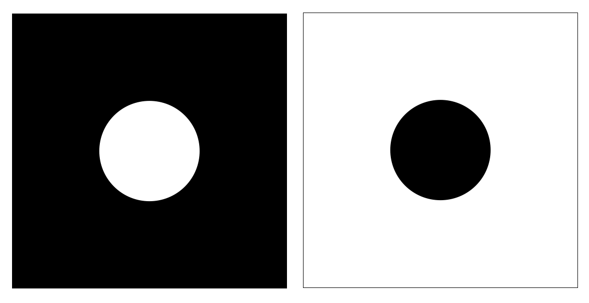

This page was generated from `/home/lectures/exp3/source/notebooks/L12/Diffraction Integral.ipynb`_.

Diffraction Integral¶
In the last section about Fresnel zones and the zone plate we have considered how different path contribute to the intensity at a point on the optical axis. We would like to generalize this idea to an integral formulation allowing us to calculate any kind of diffraction pattern.

Fig.: Diffraction integral.
Assume we have a light source \(S\) as in the image above, which sends out a spherical wave (does not need to be a spherical wave). The spatial amplitude of this wave at the point \(P(x,y)\) at a tiny aperture element \(d\sigma\)
where
and
This is the amplitude of the Huygens wave, which eminates from the point \(P(x,y)\) to propagate towards the screen at \(P(x^{\prime},y^{\prime})\). This Huygens wave contributes a fraction of an amplitude \(dU_p\) to the total amplitude in point \(P(x^{\prime},y^{\prime})\), which is given by
with \(C=i\cos(\theta)/\lambda\) as found in a more detailed calculation and called the obliquity factor.
The total amplitude at the point \(P(x^{\prime},y^{\prime})\) is then given by the integral over all contributions.
with \(dxdy=d\sigma\). The integral runs over all positions in the aperature plane \((x,y)\) where we have an opening. This integral is called the Fresnel-Kirchhoff diffraction integral and allows us to calculate complicate scalar diffraction patterns.
Fresnel Approximation¶
The diffracion integral does not always need to be calculated in completely, but we may use approxaimations to obtain diffraction patterns in different regimes. The first approximation, we would like to have a short look at is the Fresnel approximation, which yields the diffraction pattern in the near field.
The distance \(r\) from the point \(P(x,y)\) to the point \(P(x^{\prime},y^{\prime})\) can be written as
\begin{eqnarray} r&=&\sqrt{z_0^2+(x-x^{\prime})^2+(y-y^{\prime})^2}\\ &\approx & z_0\left (1+ \frac{(x-x^{\prime})^2}{2z_0^2} + \frac{(y-y^{\prime})^2}{2z_0^2}+\ldots \right) \end{eqnarray}
The second line assumes that \(\cos(\theta)=z_0/r\approx 1\) and \(C=i/\lambda\). We thus consider small diffraction angles. Using this approximation we find for the amplitude of the wave at a point \(P(x^{\prime},y^{\prime})\)
As the integration is over \(x\) and \(y\), we may draw out all screen coordinate elements such that
This is the Fresnel approximation.
Fraunhofer Approximation¶
If we further assume that the aperture is small as compared to the distance at which we observe the diffraction pattern, we can further simplify the Fresnel approximation to yield the Fraunhofer approximation giving the diffraction patter in the far field. The condition is
In this case we can neglect the term
which results in

Fig.: Diffraction pattern of a slit in the near field (Fresnel diffraction, left) and the far field (Fraunhofer diffraction, right).
While these formulas provide the mathematical tools, we may obtain a more intuitive idea about the different approximation in the following way. Consider the image below, where we would like to know about the diffraction intensity of a slit of width \(b\) at the optical axis at a distance \(D\).

Fig.: Illustration of the importance of additional geometrical path length difference for the discrimination of Fresnel (near-field) and Fraunhofer (far-field) diffraction.
The waves from the center of the slit and the edge have to travel towards that point a different pathlength, whcih we may calculate to
\begin{eqnarray} \Delta s &=& \sqrt{\frac{b^2}{4}+D^2}-D\\ &=& D\sqrt{\frac{b^2}{4D^2}+1}-D \end{eqnarray}
We may develop the square root into a Taylor series and obtain
\begin{eqnarray} \Delta s &=& \frac{b^2}{8D}-\frac{b^4}{128 D^3}+O(4)\\ &\approx & \frac{b^2}{8D} \end{eqnarray}
The second order correction term \(\frac{b^2}{8D}\) decreases quadratic with the distance \(D\) of the point, which means that at large distances, we can safely assume \(\Delta s=0\) on the axis, i.e. all waves arriving at that point have to travel the same distance. This corresponds to the far-field approximation. To be more specific we require
or
to be fullfilled to be in the far field.
This number \(F\) is called the Frensel number and gives us an idea by how far the dimensions of the opening contribute to the diffraction pattern rather than the direction of the wave propagation only.
Babinet’s Principle¶
The above considerations of diffraction have some intruiging consequence. Consider the two apertures in the image below.

Fig.: Two complementary apertures, which have the same diffraction pattern in the far field.
The left aperture will create in the far field an amplitude distribution \(U_h\), while the inverse aperture on the right will cause an amplitude \(U_d\). If we combine both amplitudes in the far field, we obtain a total amplitude distribution
In the case when we have two complementary apertures, that total amplitude has to be zeor, when hole and dot are placed at the same position. We therefore obtain
and therefore
This is the Principle of Babinet which states:
Babinet’s Principle
The far field diffraction intensity distribution of complementary apertures is the same.
The images below show an experimental demonstration of Babinet’s principle on a slit and a wire.

Fig.: Babinet’s principle demonstrated experimentally on a slit (left) and a wire (right).